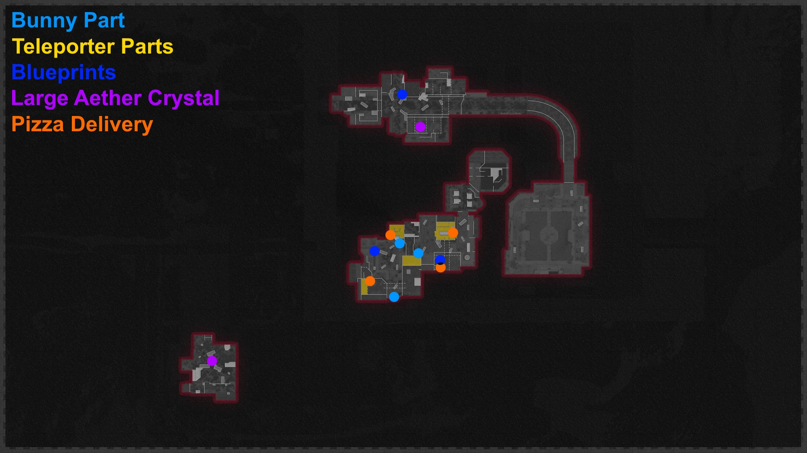
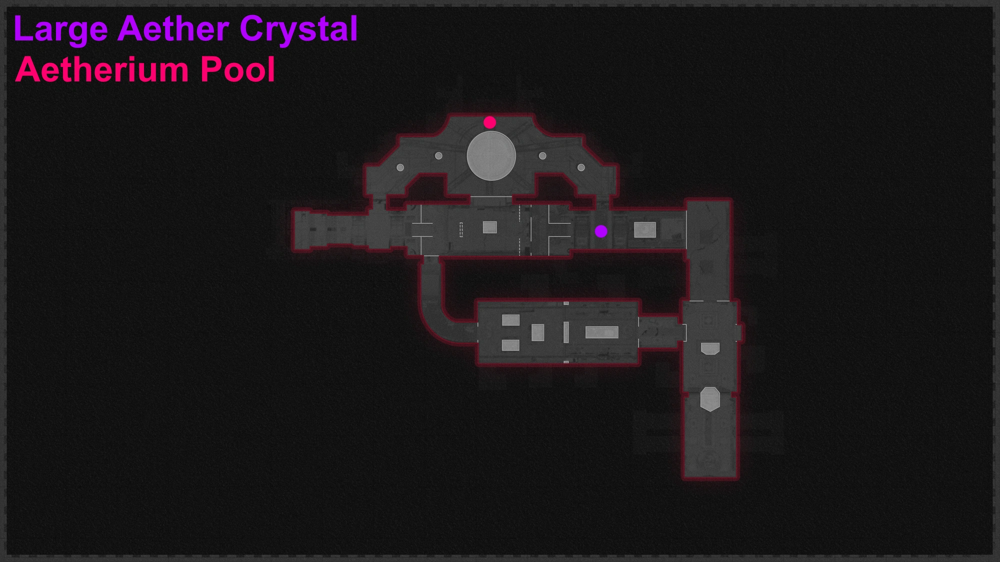

Easter Egg Song / Reward Crate
Samantha's Ballad
Use PhD's Explosion to get the Aether Bunny:
-Anytown East - Video Store
-Anytown West - Barrier
-Anytown West - Cinema
Once you get the Bunny Interact with Bubby and Place the Bunny Inside and Complete the Lockdown
Free Arcade Token
Melee the Change Machine for a Free Arcade Token
Anytown Grand Prix
Go to Bar 2F and Kill a Zombie using PhD's Sliding Explosion
Have all Players interact with the Anytown Grand Prix Arcade Machine
Finish the Race as fast as possible to Earn a Reward
Free Legendary Weapon Upgrade
Equip the Weapon you want to Upgrade, then Pick Up the Blueprint that Pertains to its Class
-Submachine Guns
-Blueprint: Main Street - Cinder Blocks
-Targets: Main Street - Cinder Blocks
-Pistols
-Blueprint: Anytown West - Flowerbed
-Targets: Anytown West - Flowerbed
-Snipers
-Blueprint: Video Store Rooftop - AC Units
-Targets: Video Store Rooftop - Windows near Bar and Grill, Cinema, and Observation Tower
Pizza Delivery
Go to Beach Pizza and Aether Shroud through the Door to the Left of the Registers
Interact with the Pizza Boxes to begin a Delivery
Deliver the Pizzas to Mannequins in less than 45 Seconds:
-Video Store 1F
-Cinema
-Bar 1F
-Burger Town
After each Delivery Request Payment from Ronald Raygun
Free Chrysalax
Start the Main Quest by Interacting with the Red Button on the Wall in Observation Tower
Have an Abomination Zap a Small Aetherium Crystal to get the Energetic Geode
Kill a Tormentor with a Flamthrower to get the Tempered Crystal Heart
Stand near the Crystal behind the Desk in the Donut Shop
Kill enemies until the Barrier around the Crystal goes away to get the Polymorphic Crystal Core
Place the Crystals into the Aetherium Pool in the Amplifier
Melee Enemies near the Pool to Charge it
Pick up the Chrysalax
Pack-A-Punch
Repair The Teleporter
-Fryer Cage - Burger Town
-Focusing Lense - Cinema
-Cathode-Ray Tube - TV Store
-Circuit Board - Video Store 1F
Lift the Lockdown
Main Quest
Activate Pack-a-Punch
Interact with the Red Button on the Wall in Observation Tower
All Players must Interact with the Panel at Fuel Processing to Begin a Lockdown
-Survive the Lockdown
-Pick up the Fuel Tank
Obtain the Chrysalax
Shoot the Orbs around the 3 Large Aetherium Crystals
-Storage Zone 5 Rooftops
-Amplifier
-Staging Area
Melee the 3 Large Aetherium Crystals with the Chrysalax
Pick up the Crystal Shard inside of the Large Crystal to Spawn an Abomination
Throw the Crystal Shard into its Mouth then Kill it once its Tail turns Red
Pick up the Catalyzed Crystal Shard
Dead Wire a Zombie near the Grand Prix Arcade Machine to Activate it
Interact with the Machine to Spawn an ARC-XD
Drive the ARC-XD into the Vent behind the Desk in the Video Store and Detonate it to the Right
Pick up the Monitor in the Video Store
Make an Abomination Charge into the Corner in Bunker Office to knock Down the Housing unit
Build the Aetherium Neutralizer on the Workbench at Main Street
**PREPARE FOR THE BOSS FIGHT**
Activate the Aetherium Neutralizer
Stay inside the Sphere to Avoid taking Damage
Break the Red Crystals around the Path and Refuel the Neutralizer to keep it Moving Forward
Interact with the Containment Door to Start the Boss Fight
Shoot Zykov's Weak Points to Deplete his Shield
Kill Zombies under Maxis to Charge the Laser Cannons
Shoot the Laser Cannons at Zykov's Weak Points to Damage Him
Repeat 4 Times to Kill Him
Ending Cutscene will Play